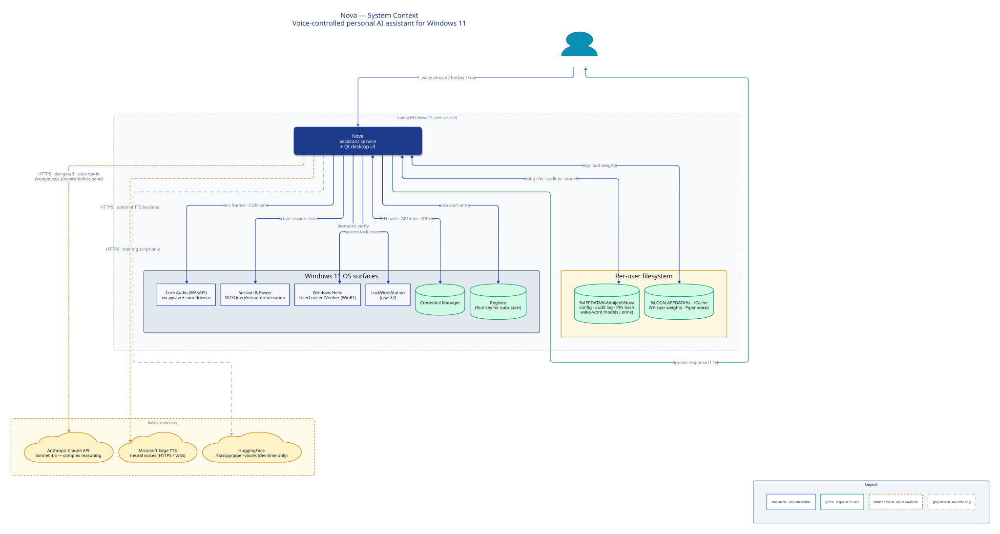
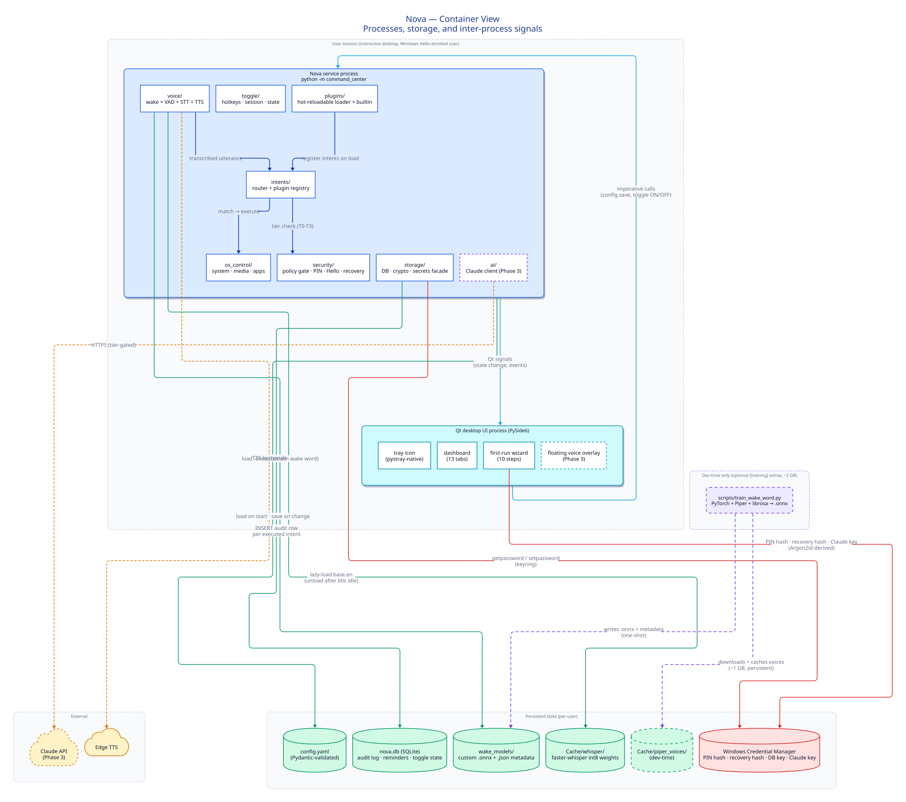
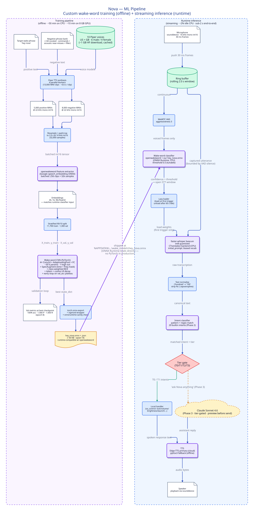
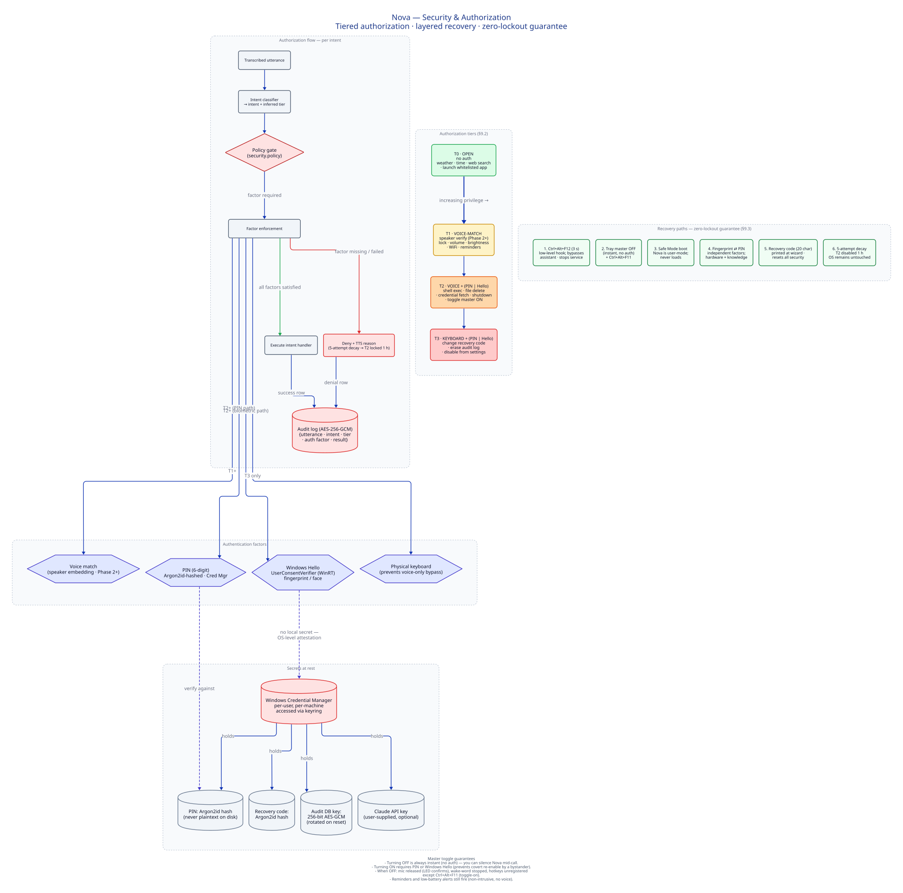

What this project is
Nova is a Windows 11 voice assistant that listens for a custom wake phrase (“Hey Nova”), transcribes commands locally, classifies intent, and either executes a native OS action or escalates to a cloud LLM — all while staying under a 3% idle-CPU budget.
The implementation repo is private. This page hosts the architecture documentation so the design can be reviewed without exposing source. For depth beyond the diagrams, see the full design document (PDF).
Technical highlights that shaped the architecture:
- A custom wake-word classifier trained from scratch in PyTorch on 13k Piper-TTS-synthesised samples (5k positive “Hey Nova” + 8k negative), reaching 100% validation accuracy. Trained model exported to ONNX (~30 KB) and loaded at runtime via ONNX Runtime — training dependencies (~2 GB) are an optional extra that stays out of production.
- Hybrid local/cloud inference. Local path (Whisper int8 + rule-based intent router) handles ~80% of commands in under 2 s. Complex reasoning escalates to Claude Sonnet behind a tier gate + user-controlled budget cap.
- Streaming real-time audio pipeline. VAD → wake classifier → lazy-loaded Whisper → intent → policy → execute, with memory cap enforcement, auto-throttle under system load, and mic release on pause.
- Four-tier authorization with three independent auth factors (voice, PIN via Argon2id, Windows Hello biometrics) and six independent recovery paths — a guarantee that the assistant can never lock the user out of their own machine.
- Engineering hygiene: strict mypy, ruff, 83% test coverage on 500+ tests, Pydantic-validated config, AES-256-GCM audit log, Windows Credential Manager for secrets.
System Context
Nova as a single system inside the user’s environment. Shows what Nova reads from (mic, session state, credential store, filesystem), what it writes to (speakers, disk, audit log), and which remote services it may call with explicit user opt-in.

Key architectural choices
- Service runs strictly as user-mode (never SYSTEM) — lockout safety
- All secrets in Windows Credential Manager, never in config files
- Cloud calls are opt-in per user with a monthly spend cap
- HuggingFace access is dev-time only (voice-model download) — production never phones home
{kind=link}
{kind=link}
Container View
The processes and storage that make up Nova’s runtime, and how they cooperate inside one user session. Note how the training pipeline is a distinct, dev-time-only container — its ~2 GB of dependencies never ship to production.

Key architectural choices
- Two cooperating in-process domains:
service(voice + OS) andui(Qt desktop), with decoupled Qt signal-slot communication - Lean production footprint: PyTorch / librosa / Piper are an
[training]extra, uninstallable after one-shot wake-word training - Tier-gated storage: PIN / recovery / DB-key hashes in Credential Manager; audit log in AES-256-GCM SQLite; wake-word models in per-user wake_models directory
- Plugin subsystem is hot-reloadable — user-authored intents land without a service restart
{kind=link}
{kind=link}
ML Pipeline
Offline training pipeline (left) that produces the custom wake-word model, and the streaming inference pipeline (right) that consumes it at runtime. The explicit boundary between training and serving reflects an MLOps decision to keep the production runtime lean enough to run on a laptop.

Key architectural choices
- End-to-end custom training: Piper TTS synthesises 13k clips across 10 voice personas → openwakeword feature extractor produces (N, 16, 96) embeddings → 4-layer CNN with SpecAugment + class-weighted BCE + cosine LR decay → torch.onnx.export
- Feature parity at training / serving boundary: training uses the same
AudioFeatures.embed_clipsfeature extractor the runtime wake classifier consumes — no train/serve skew - Model quantization: Whisper uses the int8 faster-whisper build (CTranslate2 backend) for 4× CPU speedup over FP32 with negligible accuracy loss
- Lazy-load with unload: Whisper weights load on first wake trigger, unload after 60 s of idle — ~300 MB RAM reclaimed when quiet
- Hybrid inference router: local intent classifier fires for the 20 built-in commands; Claude escalation only for
ask_anythingintents, tier-gated, preview-before-send
{kind=link}
{kind=link}
Security & Authorization
Four authorization tiers, three independent authentication factors (voice, PIN, Windows Hello), and six recovery paths. The design guarantees the assistant can decline actions for the user but can never prevent the user from using their machine.

Key architectural choices
- Argon2id for PIN + recovery code hashing (time=2, memory=64 MB)
- Biometrics via Windows Hello (UserConsentVerifier WinRT) — no local secret, OS-level attestation
- Fingerprint and PIN are independent factors: either alone satisfies Tier 2, so losing one still leaves recovery open
- Master toggle asymmetry: turning OFF is instant (no auth); turning ON requires PIN or Hello — prevents a bystander from silently re-enabling listening
- Low-level
Ctrl+Alt+F12kill switch runs before any Nova processing, uninterceptable by voice - 5-attempt decay locks Tier 2 for 1 h after repeated failures, but never touches the OS — the user keeps working
{kind=link}
{kind=link}
Technology stack
ML & Audio
- PyTorch · wake-word training
- openwakeword · feature extractor
- ONNX Runtime · inference
- faster-whisper · STT (int8)
- WebRTC VAD · voice activity
- Piper TTS · synthetic training data
- Edge-TTS + pyttsx3 · response synth
- librosa · resample / preprocess
AI / Cloud
- Claude Sonnet 4.6 · complex reasoning
- Anthropic SDK · with budget gating
- Tier-gated · preview-before-send
- User-controlled monthly budget cap
OS Integration
- pywin32 · Win32 APIs
- winsdk · WinRT (Windows Hello)
- pycaw · Core Audio volume/mute
- screen-brightness-control
- psutil · process + resource
- keyboard · global hotkeys
UI
- PySide6 · Qt desktop UI
- pystray · native tray icon
- First-run wizard · 10 guided steps
- Dashboard · 13 functional tabs
Security & Storage
- argon2-cffi · PIN hashing
- cryptography · AES-256-GCM audit log
- keyring · Credential Manager
- SQLite · audit + reminders
- Pydantic v2 · validated config
Engineering
- uv · dependency management
- mypy strict · type safety
- ruff · lint + format
- pytest · 500+ tests, 83% cov
- pytest-qt · UI integration tests
- loguru · structured logging